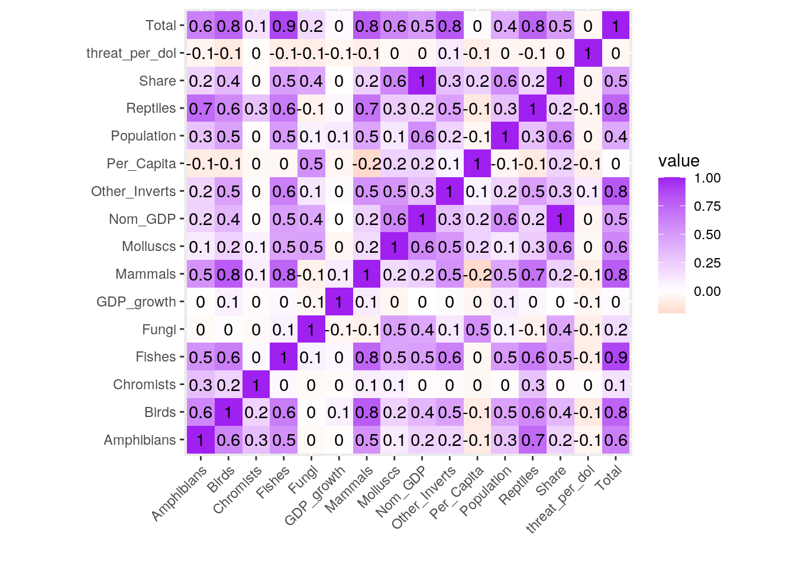
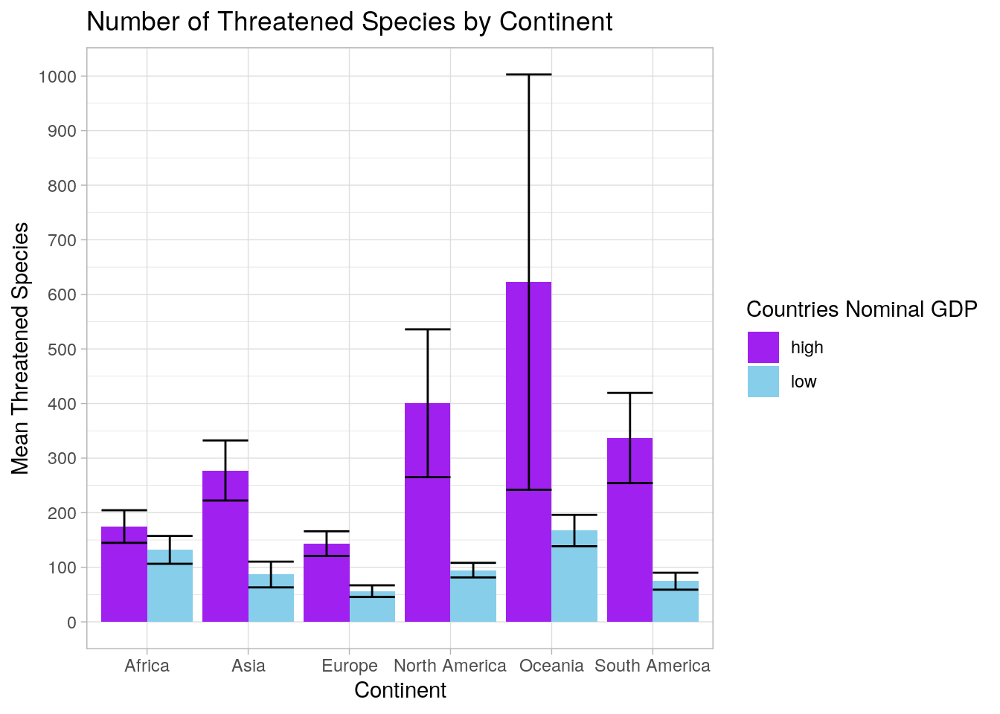
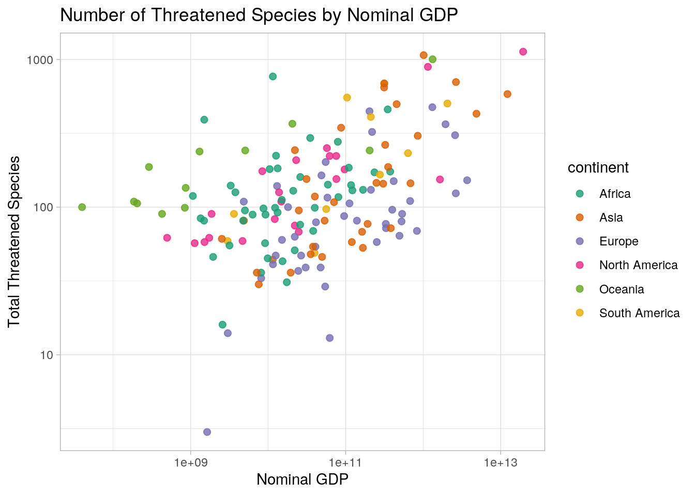
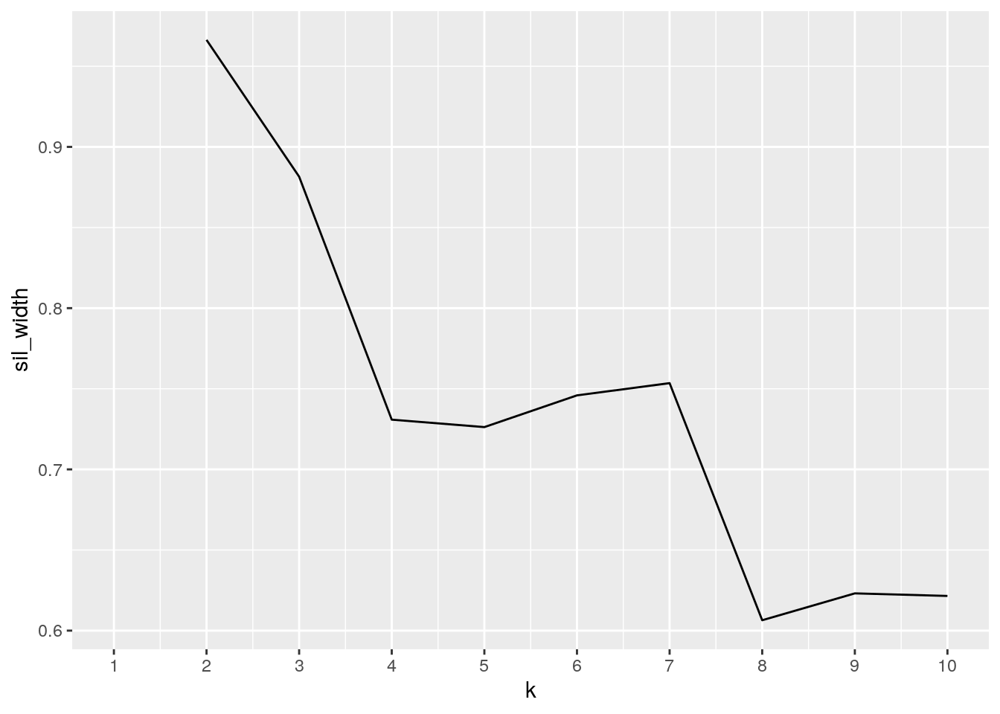
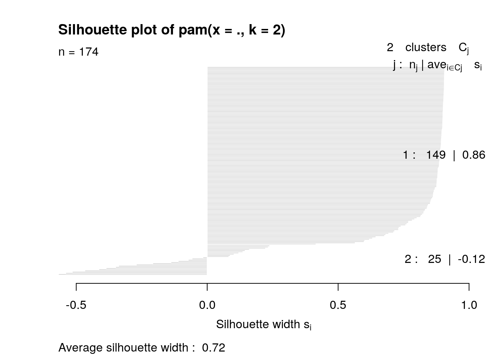
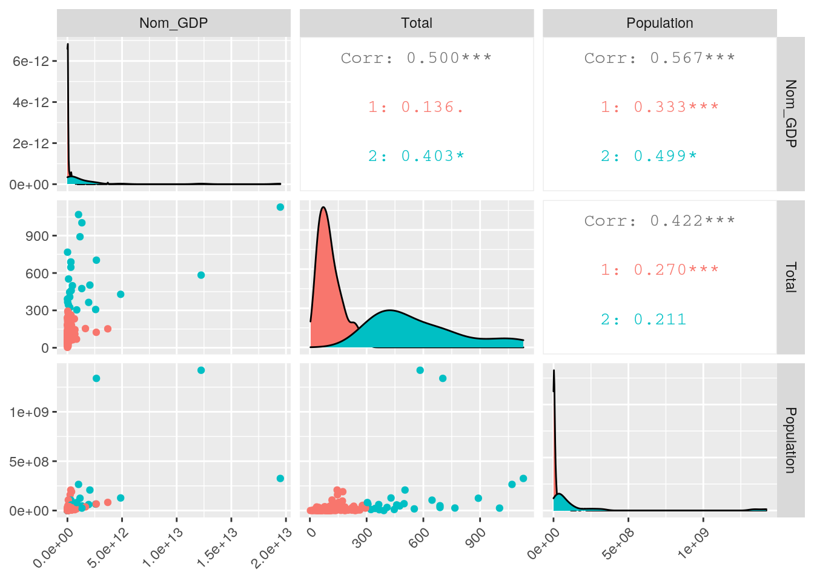

The dataset "iucn" was obtained from the IUCN website and includes information on the number of threatened species by country. Each row has a variable for the country name and variables for the number of threatened mammals, birds, reptiles, amphibians, fishes, molluscs, other invertebrates, plants, fungi, and chemists. In addition, each row has a variable with the total number of threatened species for the country.
The dataset "gdp" gives GDP figures by country published by the World Bank for 2017. The information was obtained from worldmeters.info. The dataset includes variables for Country, nominal GDP, abbreviated GDP, GDP growth, population size, GDP per capita, and share of World GDP. Additionally, the dataset "continents" has variables for a country and the continent on which it is located. This dataset came from Wikipedia.
I am interested in biological conservation, so by combining these datasets, I hope to visualize whether there are any trends between a countries economic status and the number of threatened species within that country. I have also added the continent location to see if there are any trends between location and number of threatened species. I expect countries with higher GDPs will have more threatened species because they are more industrialized, leading to more habitat destruction.
library(tidyverse)
iucn <- read.csv("thrspecies.csv")
gdp <- read.csv("goodcountriesgdp.csv")
continents <- read.csv("continents.csv")I chose to inner join the datasets "gdp" and "iucn" because I will need to have variables from each dataset to visualize the trends between GDP and number of threatened species for a country. Therefore, dropping the rows without matches in both data sets makes the most sense. Similarly, I chose to left join the "continents" dataset to the combined set of "gdp" and "iucn" because I wanted to preserve all gdp/iucn data while introducing the continents as an additional variable.
By inner joining, I lost 76 rows from the "iucn" dataset and 16 rows from the "gdp" dataset. By left joining, I lost 20 rows from the "continents" dataset. This is important to keep in mind as it means that any trends seen are representative of the countries with matches and not all the countries in the world.
joined <- inner_join(iucn, gdp, by = c(Name = "Country"))
joined <- joined %>% left_join(continents, by = c(Name = "country"))joined <- joined %>% rename(Country = Name, Nom_GDP = GDP, GDP_growth = GDP.2,
Per_Capita = GDP.3, Reptiles = Reptiles., Fishes = Fishes.,
Molluscs = Molluscs., Other_Inverts = Other.Inverts., Plants = Plants.,
Fungi = Fungi., Chromists = Chromists., Share = Share.of) %>%
select(-X., -GDP.1)
joined <- joined %>% separate(GDP_growth, into = c("GDP_growth",
"p"), sep = "%", convert = T) %>% separate(Share, into = c("Share",
"d"), sep = "%", convert = T) %>% select(-p, -d)
joined <- joined %>% separate(Nom_GDP, into = c("Nom_GDP", "z"),
convert = T) %>% separate(Per_Capita, into = c("Per_Capita",
"zz"), convert = T) %>% select(-z, -zz, -Total) %>% mutate(Total = (Mammals +
Birds + Reptiles + Amphibians + Fishes + Molluscs + Other_Inverts +
Fungi + Chromists))
glimpse(joined)## Rows: 174
## Columns: 18
## $ Country <fct> Antigua and Barbuda, Aruba, Bahamas, Barbados, Cuba, Do…
## $ Mammals <int> 2, 2, 5, 3, 10, 3, 7, 3, 4, 7, 2, 2, 77, 5, 30, 0, 11, …
## $ Birds <int> 2, 2, 8, 3, 20, 6, 17, 2, 17, 10, 7, 5, 96, 21, 51, 4, …
## $ Reptiles <int> 7, 2, 11, 7, 29, 3, 47, 7, 54, 28, 8, 7, 47, 7, 25, 1, …
## $ Amphibians <int> 0, 0, 0, 0, 49, 2, 32, 1, 49, 15, 0, 8, 122, 5, 20, 0, …
## $ Fishes <int> 36, 32, 47, 35, 49, 37, 33, 34, 37, 34, 34, 43, 148, 27…
## $ Molluscs <int> 0, 1, 1, 0, 0, 0, 0, 0, 0, 0, 0, 0, 15, 1, 38, 0, 0, 52…
## $ Other_Inverts <int> 11, 1, 11, 11, 23, 11, 19, 10, 14, 15, 11, 10, 70, 8, 1…
## $ Plants <fct> 3, 5, 12, 4, 179, 12, 48, 4, 94, 214, 8, 50, 631, 11, 5…
## $ Fungi <int> 0, 0, 0, 0, 0, 0, 0, 0, 0, 0, 0, 0, 8, 0, 12, 0, 4, 0, …
## $ Chromists <int> 0, 0, 0, 0, 0, 0, 0, 0, 0, 0, 0, 0, 0, 0, 0, 0, 0, 0, 0…
## $ Nom_GDP <dbl> 1.510085e+09, 2.700559e+09, 1.216210e+10, 4.673500e+09,…
## $ GDP_growth <dbl> 3.03, 1.33, 1.44, 1.00, 1.78, -9.53, 4.55, 5.06, 1.17, …
## $ Population <dbl> 95426, 105366, 381755, 286232, 11339254, 71458, 1051310…
## $ Per_Capita <int> 15825, 25630, 31858, 16328, 8541, 6951, 7223, 10164, 76…
## $ Share <dbl> 0.00, 0.00, 0.02, 0.01, 0.12, 0.00, 0.09, 0.00, 0.01, 0…
## $ continent <fct> North America, NA, North America, North America, North …
## $ Total <int> 58, 40, 83, 59, 180, 62, 155, 57, 175, 109, 62, 75, 583…Above I used the rename function to fix some column title formatting and make them more informative. I also removed columns I did not need. Additionally, I used separate to remove the percentage sign from the GDP_growth and Share variables and changed them into numeric values. Lastly, I removed the ".00" from the ends of Nom_GDP and Per_Capita to make them easier to read and I created a new Total column so it is classified as numeric.
joined %>% pivot_wider(names_from = "continent", values_from = "Country") %>%
glimpse()## Rows: 174
## Columns: 23
## $ Mammals <int> 2, 2, 5, 3, 10, 3, 7, 3, 4, 7, 2, 2, 77, 5, 30, 0, 11…
## $ Birds <int> 2, 2, 8, 3, 20, 6, 17, 2, 17, 10, 7, 5, 96, 21, 51, 4…
## $ Reptiles <int> 7, 2, 11, 7, 29, 3, 47, 7, 54, 28, 8, 7, 47, 7, 25, 1…
## $ Amphibians <int> 0, 0, 0, 0, 49, 2, 32, 1, 49, 15, 0, 8, 122, 5, 20, 0…
## $ Fishes <int> 36, 32, 47, 35, 49, 37, 33, 34, 37, 34, 34, 43, 148, …
## $ Molluscs <int> 0, 1, 1, 0, 0, 0, 0, 0, 0, 0, 0, 0, 15, 1, 38, 0, 0, …
## $ Other_Inverts <int> 11, 1, 11, 11, 23, 11, 19, 10, 14, 15, 11, 10, 70, 8,…
## $ Plants <fct> 3, 5, 12, 4, 179, 12, 48, 4, 94, 214, 8, 50, 631, 11,…
## $ Fungi <int> 0, 0, 0, 0, 0, 0, 0, 0, 0, 0, 0, 0, 8, 0, 12, 0, 4, 0…
## $ Chromists <int> 0, 0, 0, 0, 0, 0, 0, 0, 0, 0, 0, 0, 0, 0, 0, 0, 0, 0,…
## $ Nom_GDP <dbl> 1.510085e+09, 2.700559e+09, 1.216210e+10, 4.673500e+0…
## $ GDP_growth <dbl> 3.03, 1.33, 1.44, 1.00, 1.78, -9.53, 4.55, 5.06, 1.17…
## $ Population <dbl> 95426, 105366, 381755, 286232, 11339254, 71458, 10513…
## $ Per_Capita <int> 15825, 25630, 31858, 16328, 8541, 6951, 7223, 10164, …
## $ Share <dbl> 0.00, 0.00, 0.02, 0.01, 0.12, 0.00, 0.09, 0.00, 0.01,…
## $ Total <int> 58, 40, 83, 59, 180, 62, 155, 57, 175, 109, 62, 75, 5…
## $ `North America` <fct> Antigua and Barbuda, NA, Bahamas, Barbados, Cuba, Dom…
## $ `NA` <fct> NA, Aruba, NA, NA, NA, NA, NA, NA, NA, NA, NA, NA, NA…
## $ Asia <fct> NA, NA, NA, NA, NA, NA, NA, NA, NA, NA, NA, NA, China…
## $ Europe <fct> NA, NA, NA, NA, NA, NA, NA, NA, NA, NA, NA, NA, NA, N…
## $ Africa <fct> NA, NA, NA, NA, NA, NA, NA, NA, NA, NA, NA, NA, NA, N…
## $ Oceania <fct> NA, NA, NA, NA, NA, NA, NA, NA, NA, NA, NA, NA, NA, N…
## $ `South America` <fct> NA, NA, NA, NA, NA, NA, NA, NA, NA, NA, NA, NA, NA, N…For the most part, my data was already tidy. There were some alterations I made using separate and rename in the section above, but the columns themselves did not warrant any pivoting. By pivoting wider, I changed the dataset so that each continent is a variable where the cell values are the continent's countries. This created a lot of NA's in my data and I will not be using it in my later wrangling/ visualization.
joined %>% summarise(med = median(Nom_GDP))## med
## 1 35177734240joined <- joined %>% mutate(NGDPC = case_when(Nom_GDP > 35177734240 ~
"high", Nom_GDP <= 35177734240 ~ "low"))
joined <- joined %>% mutate(threat_per_dol = Total/Nom_GDP)
glimpse(joined)## Rows: 174
## Columns: 20
## $ Country <fct> Antigua and Barbuda, Aruba, Bahamas, Barbados, Cuba, D…
## $ Mammals <int> 2, 2, 5, 3, 10, 3, 7, 3, 4, 7, 2, 2, 77, 5, 30, 0, 11,…
## $ Birds <int> 2, 2, 8, 3, 20, 6, 17, 2, 17, 10, 7, 5, 96, 21, 51, 4,…
## $ Reptiles <int> 7, 2, 11, 7, 29, 3, 47, 7, 54, 28, 8, 7, 47, 7, 25, 1,…
## $ Amphibians <int> 0, 0, 0, 0, 49, 2, 32, 1, 49, 15, 0, 8, 122, 5, 20, 0,…
## $ Fishes <int> 36, 32, 47, 35, 49, 37, 33, 34, 37, 34, 34, 43, 148, 2…
## $ Molluscs <int> 0, 1, 1, 0, 0, 0, 0, 0, 0, 0, 0, 0, 15, 1, 38, 0, 0, 5…
## $ Other_Inverts <int> 11, 1, 11, 11, 23, 11, 19, 10, 14, 15, 11, 10, 70, 8, …
## $ Plants <fct> 3, 5, 12, 4, 179, 12, 48, 4, 94, 214, 8, 50, 631, 11, …
## $ Fungi <int> 0, 0, 0, 0, 0, 0, 0, 0, 0, 0, 0, 0, 8, 0, 12, 0, 4, 0,…
## $ Chromists <int> 0, 0, 0, 0, 0, 0, 0, 0, 0, 0, 0, 0, 0, 0, 0, 0, 0, 0, …
## $ Nom_GDP <dbl> 1.510085e+09, 2.700559e+09, 1.216210e+10, 4.673500e+09…
## $ GDP_growth <dbl> 3.03, 1.33, 1.44, 1.00, 1.78, -9.53, 4.55, 5.06, 1.17,…
## $ Population <dbl> 95426, 105366, 381755, 286232, 11339254, 71458, 105131…
## $ Per_Capita <int> 15825, 25630, 31858, 16328, 8541, 6951, 7223, 10164, 7…
## $ Share <dbl> 0.00, 0.00, 0.02, 0.01, 0.12, 0.00, 0.09, 0.00, 0.01, …
## $ continent <fct> North America, NA, North America, North America, North…
## $ Total <int> 58, 40, 83, 59, 180, 62, 155, 57, 175, 109, 62, 75, 58…
## $ NGDPC <chr> "low", "low", "low", "low", "high", "low", "high", "lo…
## $ threat_per_dol <dbl> 3.840844e-08, 1.481175e-08, 6.824479e-09, 1.262437e-08…joined %>% filter(NGDPC == "high") %>% summarize(mean(Total),
sd(Total))## mean(Total) sd(Total)
## 1 238.092 242.4311joined %>% filter(NGDPC == "low") %>% summarize(mean(Total),
sd(Total))## mean(Total) sd(Total)
## 1 106.8506 101.4381To start wrangling my data, I found the median of the nominal GDP ($35177734240) to create a categorical variable that tells whether a countries nominal GDP is above the mean (high) or below the mean (low). Following this, I created an additional column, threat_per_dol, which is a function of the number of threatened species per nominal GDP dollar. To quantify high and low nominal GDP, I filtered the NGDPC variable to select for "high" or "low" nominal GDP. I then summarized the mean and standard deviation of each group. The countries with high nominal GDPs are characterized by a mean of 238.092 species and a standard deviation of 242.431 species. The countries with low nominal GDPs are characterized by a mean of 106.851 species and standard deviation of 101.438 species. This shows that countries categorized as having high GDP have more threatened species and more variation in the number of threatened species than countries categorized as having low GDP.
skinnydata <- joined %>% select(Country, continent, Total, Nom_GDP,
NGDPC)
skinnydata %>% summarise(fivenum = fivenum(Total))## fivenum
## 1 3.0
## 2 62.0
## 3 101.5
## 4 183.0
## 5 1129.0skinnydata %>% arrange(Total) %>% slice(1:3, 172:174)## Country continent Total Nom_GDP NGDPC
## 1 San Marino Europe 3 1.632860e+09 low
## 2 Luxembourg Europe 13 6.231636e+10 high
## 3 Andorra Europe 14 3.012914e+09 low
## 4 Australia Oceania 1003 1.323421e+12 high
## 5 Indonesia Asia 1069 1.015421e+12 high
## 6 United States North America 1129 1.948539e+13 highskinnydata %>% group_by(continent, NGDPC) %>% summarise(mean_t = mean(Total),
sd_t = sd(Total)) %>% na.omit() %>% arrange(mean_t)## # A tibble: 12 x 4
## # Groups: continent [6]
## continent NGDPC mean_t sd_t
## <fct> <chr> <dbl> <dbl>
## 1 Europe low 56.3 38.6
## 2 South America low 74.5 21.9
## 3 Asia low 86.8 70.7
## 4 North America low 94.8 48.2
## 5 Africa low 132. 142.
## 6 Europe high 143. 122.
## 7 Oceania low 167. 90.8
## 8 Africa high 175. 103.
## 9 Asia high 277. 275.
## 10 South America high 337. 234.
## 11 North America high 400. 383.
## 12 Oceania high 622. 538.skinnydata %>% group_by(continent) %>% select(where(is.numeric)) %>%
summarise_all(min) %>% na.omit()## # A tibble: 6 x 3
## continent Total Nom_GDP
## <fct> <int> <dbl>
## 1 Africa 16 1068124330
## 2 Asia 30 2528007911
## 3 Europe 3 1632860041
## 4 North America 57 496727000
## 5 Oceania 90 39731317
## 6 South America 49 2995827901skinnydata %>% group_by(continent) %>% select(where(is.numeric)) %>%
summarise_all(max) %>% na.omit()## # A tibble: 6 x 3
## continent Total Nom_GDP
## <fct> <int> <dbl>
## 1 Africa 767 3.76e11
## 2 Asia 1069 1.22e13
## 3 Europe 475 3.69e12
## 4 North America 1129 1.95e13
## 5 Oceania 1003 1.32e12
## 6 South America 688 2.05e12I then make the dataset "skinnydata" from the joined data to select and set the columns I am most interested in. The five number summary of the total threatened species informs that the minimum number of threatened species in a country is 3, the maximum is 1129, the first quartile is 62 species, the third quartile is 183 species, and the median is 101.5 species. By arranging the data by total threatened species then taking a slice of the first and last rows, we learn that two of the three countries with the least threatened species are categorized as having "low" nominal GDP. In contrast, all three countries with the highest number of threatened species are categorized as having "high" nominal GDP. This reflects the findings above that countries with high nominal GDP have more threatened species than countries with lower nominal GDP. Similarly, when grouping by continent and nominal GDP type, we find that on average European countries with low nominal GDP have less threatened species and countries in Oceania with high nominal GDP have the most threatened species. However, we also see that countries with high nominal GDP have higher standard deviations for total threatened species, suggesting a large amount of spread in the data. Lastly, we look at the minimum and maximum values for nominal GDP and total threatened species for each continent. We see that Europe has the country with the least threatened species, while Oceania has the country with the lowest nominal GDP. We also see that North America has the country with the most threatened species and the highest nominal GDP.
joined %>% select_if(is.numeric) %>% cor(use = "pair")## Mammals Birds Reptiles Amphibians Fishes
## Mammals 1.00000000 0.79586632 0.69378041 0.541323419 0.75399809
## Birds 0.79586632 1.00000000 0.58225800 0.594405332 0.64512509
## Reptiles 0.69378041 0.58225800 1.00000000 0.733148133 0.64723540
## Amphibians 0.54132342 0.59440533 0.73314813 1.000000000 0.54189269
## Fishes 0.75399809 0.64512509 0.64723540 0.541892687 1.00000000
## Molluscs 0.17970101 0.22686805 0.25436255 0.097560694 0.45673488
## Molluscs Other_Inverts Fungi Chromists Nom_GDP
## Mammals 0.17970101 0.54178235 -0.07453488 0.09091427 0.23540862
## Birds 0.22686805 0.47398848 0.01658004 0.22258177 0.36339414
## Reptiles 0.25436255 0.47406877 -0.06669058 0.30647446 0.22532870
## Amphibians 0.09756069 0.21380795 -0.02796298 0.31837259 0.22127631
## Fishes 0.45673488 0.63027506 0.06888325 0.03512286 0.47800095
## Molluscs 1.00000000 0.52794154 0.46872957 0.07356495 0.59909139
## GDP_growth Population Per_Capita Share Total
## Mammals 0.100432817 0.45331363 -0.19390723 0.235302915 0.79437216
## Birds 0.076399877 0.46126945 -0.10586869 0.363401977 0.76212338
## Reptiles 0.039954185 0.30889346 -0.11418729 0.225281790 0.75806509
## Amphibians -0.006815229 0.30262207 -0.09903174 0.221228620 0.62675751
## Fishes 0.036207275 0.50113425 -0.04346794 0.478027527 0.88600910
## Molluscs -0.047961561 0.11200965 0.22449292 0.599103766 0.59411239
## threat_per_dol
## Mammals -0.08984720
## Birds -0.11191724
## Reptiles -0.05866019
## Amphibians -0.05268822
## Fishes -0.08679601
## Molluscs -0.03369301
## [ reached getOption("max.print") -- omitted 10 rows ]joined %>% select_if(is.numeric) %>% cor(use = "pair") %>% as.data.frame %>%
rownames_to_column %>% pivot_longer(-1) %>% ggplot(aes(rowname,
name, fill = value)) + geom_tile() + geom_text(aes(label = round(value,
1))) + xlab("") + ylab("") + coord_fixed() + scale_fill_gradient2(low = "red",
high = "purple") + theme(axis.text.x = element_text(angle = 45,
hjust = 1))
The correlation heatmap does not show any strong correlations between the data. There is a 0.5 correlation between total threatened species and nominal GDP, 0 correlation between total threatened species and GDP growth, and 0 correlation between total threatened species and GDP per capita. The strongest correlations are seen between the number of species threatened in a specific animal kingdom and the total number of threatened species, which is to be expected since the total number of threatened species is a sum of the other animal kingdoms. Interestingly, the number of threatened fishes and total threatened species has a high correlation of 0.9. Nominal GDP and share of global GDP also have a high correlation of 1, which is not unexpected as the values are directly related.
joined %>% na.omit() %>% ggplot(aes(x = continent, y = Total,
fill = NGDPC)) + geom_bar(stat = "summary", position = "dodge") +
geom_errorbar(stat = "summary", position = "dodge") + theme_light() +
ggtitle("Number of Threatened Species by Continent") + ylab("Mean Threatened Species") +
xlab("Continent") + scale_y_continuous(breaks = seq(0, 1010,
100)) + scale_fill_manual(name = "Countries Nominal GDP",
values = c(high = "purple", low = "sky blue")) This chart shows a significant difference between the mean number of threatened species based on nominal GDP grouping within a continent. Countries with high nominal GDPs tend to have a higher mean number of threatened species than countries with low nominal GDPs. This difference is shown on all continents except for Africa.
The chart also shows that Oceania has the most threatened species, followed by North America and South America. countries with high nominal GDPs on these continents also have large standard error bars, suggesting a large amount of spread in the number of threatened species in these countries. Interestingly, countries with low nominal GDP appear to have little spread in the number of threatened species in comparison.
joined %>% na.omit() %>% ggplot(aes(x = Nom_GDP, y = Total, color = continent)) +
geom_point(size = 2, alpha = 0.8) + theme_light() + ggtitle("Number of Threatened Species by Nominal GDP") +
ylab("Total Threatened Species") + xlab("Nominal GDP") +
scale_x_log10() + scale_y_log10() + scale_color_brewer(palette = "Dark2") Since there was an uneven spread of Nominal GDP data, with a few countries having extremely large nominal GDPs, I decided to graph the log values of the data to more easily visualize the data. From this chart, we can see there is no convincing relationship between the total number of threatened species and nominal GDP. However, there is a slight positive relationship between the two variables when Nominal GDP is very high.
Additionally, this graph shows within a continent, there is a general even spread of countries having high and low nominal GDPs. However, countries in Oceania, North America, and Africa tend to make up the lowest nominal GDPs and countries in Europe and Asia make up most of the highest nominal GDPs.
library(cluster)
pamdata <- joined %>% select(Nom_GDP, Total, Population)
sil_width <- vector()
for (i in 2:10) {
pam_fit <- pam(pamdata, k = i)
sil_width[i] <- pam_fit$silinfo$avg.width
}
ggplot() + geom_line(aes(x = 1:10, y = sil_width)) + scale_x_continuous(name = "k",
breaks = 1:10)
pam <- pamdata %>% scale() %>% pam(2)
plot(pam, which = 2)
pam## Medoids:
## ID Nom_GDP Total Population
## [1,] 48 -0.18468511 -0.4346848 -0.2227878
## [2,] 109 0.01215102 1.6555550 0.1961461
## Clustering vector:
## [1] 1 1 1 1 1 1 1 1 1 1 1 1 2 1 2 1 1 1 1 1 1 1 1 1 1 1 1 2 1 2 1 1 1 2 1 1 1
## [38] 1 1 1 1 1 1 2 1 1 1 1 1 2 1 1 1 1 1 1 1 1 2 1 1 1 1 1 1 1 1 2 1 1 1 1 2 1
## [75] 1 1 1 1 1 1 2 1 1 1 1 1 1 2 1 2 2 1 1 2 1 1 1 1 1 2
## [ reached getOption("max.print") -- omitted 74 entries ]
## Objective function:
## build swap
## 0.6011228 0.5982290
##
## Available components:
## [1] "medoids" "id.med" "clustering" "objective" "isolation"
## [6] "clusinfo" "silinfo" "diss" "call" "data"Based on the plot, I chose to make two clusters to maximize the silhouette width. The average silhouette width is 0.72, showing that it has a strong structure. After running PAM, the data shows that the first cluster is characterized by low nominal GDP, low total threatened species, and low population. The second cluster is characterized by high nominal GDP, high total threatened species, and high population.
library(GGally)
pamdata %>% mutate(cluster = as.factor(pam$clustering)) %>% ggpairs(columns = c("Nom_GDP",
"Total", "Population"), aes(color = cluster)) + theme(axis.text.x = element_text(angle = 45,
hjust = 1)) The plot shows that total threatened species and nominal GDP have a positive correlation of 0.500, suggesting that as nominal GDP increases, the number of threatened species increases as well. Additionally, we see a positive correlation between nominal GDP and population size, suggesting that countries with larger populations tend to have a higher nominal GDP. Lastly, we see a positive correlation between population size and total threatened species, suggesting that as populations grow larger more species become threatened.